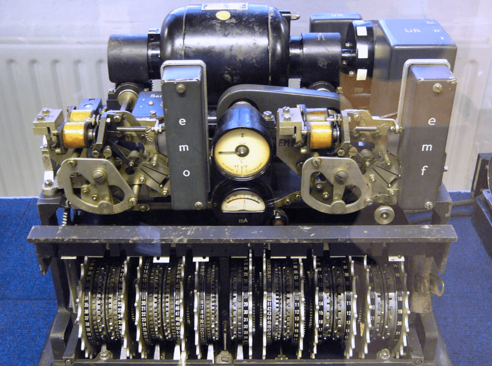

Lorenz Cipher
Hitler's strategic cipher — broken by a mistake, and it built the world's first computer
Why This Matters
The Lorenz SZ40/42 protected Hitler’s highest-level strategic communications. Breaking it — without ever seeing the machine — led Bill Tutte to reconstruct its logic and Tommy Flowers to build Colossus, the world’s first programmable electronic computer.

While Enigma protected German field communications, the Lorenz SZ40/42 protected Hitler's strategic communications to his senior commanders. Where Enigma was a hand-operated cipher machine, Lorenz was a fully automatic teleprinter attachment — messages fed in on paper tape, encrypted output punched automatically.
On August 30, 1941, a German operator sent a 4,000-character message, received a request to resend, and sent it again — with the same settings but slightly different plaintext (abbreviating some words). This catastrophic procedural error gave Bletchley Park cryptanalyst Bill Tutte enough to reconstruct the entire Lorenz cipher structure without ever seeing the machine. Tommy Flowers then built Colossus to automate the attack.
Lorenz SZ42 used 12 cipher wheels:
5 Chi (χ) wheels: key stream
5 Psi (ψ) wheels: irregular key
2 Motor wheels: control Psi movement
Encryption: XOR operations on 5-bit
teletype characters (Baudot code)
C = P XOR χ-stream XOR ψ-stream
Wheel pin counts: 41,31,29,26,23,
43,47,51,53,59,
61,37
Total period: LCM of all wheels
= astronomically large — never repeats in practice
The operator's mistake (same settings, similar plaintext) created a "depth" — two messages XORed together give P1 XOR P2 (the keys cancel). From this, Tutte deduced the complete wheel structure without seeing the machine — a cryptanalytic feat considered one of the greatest intellectual achievements of WWII. Colossus (1943) automated the wheel-setting problem, running at 5,000 characters per second.
| Concept from Lorenz Cipher | Modern Evolution |
|---|---|
| Wheel-based keystream generator | Linear Feedback Shift Registers (LFSRs): the direct descendant of rotor-based keystreams |
| XOR teleprinter encryption | Vernam cipher: XOR is the foundation of all stream cipher design |
| Breaking it built Colossus | The needs of cryptanalysis drove the invention of programmable computing |
| Depth attack on reused settings | Nonce reuse attacks: identical to the Lorenz depth attack, still relevant today |
Plaintext character: H
Baudot (ITA2) code: 10100 (5-bit)
Wheel outputs at current position:
χ wheels (5 bits): 0 1 1 0 1
ψ wheels (5 bits): 1 1 0 1 0
Step 1 — XOR with χ stream:
Plaintext: 1 0 1 0 0
χ stream: 0 1 1 0 1
Result: 1 1 0 0 1
Step 2 — XOR with ψ stream:
Intermediate: 1 1 0 0 1
ψ stream: 1 1 0 1 0
Ciphertext: 0 0 0 1 1 = Baudot "D"
After each character:
• All 5 χ wheels advance one position
• Motor wheels decide whether ψ wheels step
(irregular motion = extra security)
With all 12 wheels: period before repetition
≈ 1.6 × 10¹⁹ characters — effectively infinite- Enigma Machine — The field-level rotor cipher Lorenz outranked
- One-Time Pad — Lorenz used XOR like a OTP but with a periodic key
- VIC Cipher — Cold War hand cipher that resisted machine analysis
| Exhibit | 28 of 37 |
| Era | WWII · Germany · 1940 |
| Security | Broken |
| Inventor | Lorenz AG · German High Command |
| Year | 1940 |
| Key Type | 12-wheel teleprinter cipher (Vernam-based) |
| Broken By | Bill Tutte · Known plaintext · Colossus computer (1943) |